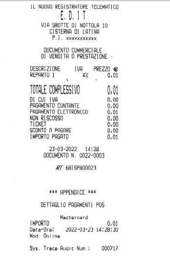

Connettività, POS e dongle
Panoramica
Questo capitolo descrive i collegamenti di rete del registratore, il dongle Wi-Fi esterno e il collegamento con il terminale di pagamento POS.
Collegamenti di rete
Il registratore comunica in rete tramite cavo Ethernet (LAN), tramite Wi-Fi oppure tramite il dongle Wi-Fi esterno, dove previsto. I parametri di rete si impostano con la funzione 833. Per le altre funzioni di programmazione vedere Programmazione.
Dongle Wi-Fi E.D.it
Il dongle Wi-Fi E.D.it è un accessorio esterno che collega il registratore alla rete Wi-Fi.
- Smarty evo, Smarty evo+ e Jolly: il dongle esterno non è previsto. Il Wi-Fi è gestito dal modulo di rete interno del registratore.
da confermare la versione software minima per il dongle nei modelli Zero Plus, Smarty Plus e Smarty Tour+: non esiste un riferimento di versione per questo accessorio.
Collegamento al registratore
Il dongle ha un connettore RJ45 e un connettore USB. Il collegamento al registratore segue lo schema della scheda.
Il dongle si collega alla porta seriale COM1 del registratore, che ne rileva la presenza. Quando il Wi-Fi è connesso e ha un indirizzo IP, uno dei due LED resta acceso fisso; in caso contrario lampeggia.
da confermare il tipo di cavo e il colore dei LED.
Configurazione della rete con 833
- Digitare 833 e confermare.
- Se il cavo Ethernet è collegato e il dongle è presente, compare il menu TIPO. Scegliere LAN oppure WIFI.
- Se il cavo non è collegato e il dongle è presente, il registratore passa direttamente alla configurazione Wi-Fi.
- Se il dongle non è presente, si configura la rete LAN.
Parametri Wi-Fi
- Se il Wi-Fi è già connesso, compare CAMB. RETE?:
- SI: il registratore cerca le reti disponibili.
- NO: il registratore non cambia rete e passa ai parametri DHCP.
- Se il Wi-Fi non è connesso, il registratore cerca direttamente le reti.
- Scegliere la rete dall'elenco RETE:. Se non vengono trovate reti, il display mostra "NESSUNA RETE TROVATA".
- Digitare la PASSWORD della rete e confermare.
- Impostare WIFI DHCP su SI oppure NO. Con DHCP su NO si impostano indirizzo IP, netmask e gateway.
In caso di errore di connessione il display mostra PASSWORD ERRATA, TIMEOUT CONN. oppure WIFI MODEM ERROR.
se il Wi-Fi ha XON-XOFF attivo, il display mostra XON-XOFF ATTIVO. Se la SIM è attiva, il display mostra SIM.TAST.ATTIVA.
Uso con registratore a batteria
Il funzionamento a batteria riguarda i registratori ambulanti.
- Smarty Tour+ e Jolly: sono registratori ambulanti e possono funzionare a batteria.
- Zero Plus, Smarty Plus, Smarty evo e Smarty evo+: non prevedono il funzionamento a batteria.
Con alimentazione a batteria, se il Wi-Fi non è richiesto, il registratore spegne il dongle per risparmiare energia. Per la trasmissione, il registratore prova prima la porta Ethernet e, se il cavo non è collegato, passa al Wi-Fi.
il registratore usa un solo canale di comunicazione alla volta: XON-XOFF su rete non può essere attivo insieme al collegamento seriale con il PC. Da confermare le limitazioni di E.D.it ed EditTop su rete a batteria.
Per la trasmissione dei corrispettivi vedere Chiusure e rapporti.
Collegamento RT-POS
Il registratore può collegarsi a un terminale POS per registrare i pagamenti elettronici. I dati della transazione vengono stampati in appendice allo scontrino.

Le funzioni POS sono previste per tutti e sei i modelli.
da confermare quali interfacce fisiche sono disponibili su ciascun modello per il collegamento del terminale: questo punto non è ancora verificato.
Tipi di terminale
| Tipo POS | Collegamento e note |
|---|---|
| NESSUNO | Nessun terminale collegato. |
| NON SUPP. | Terminale non supportato: i pagamenti elettronici vengono registrati off-line. |
| MYPOS | Terminale myPOS. Interfaccia USB. |
| PROT.17 | Terminale con protocollo 17. Interfacce USB, LAN/WiFi o SERIALE. Richiede la scelta della stampa. |
| DOJO | Configurazione dedicata. Non richiede indirizzo IP né porta TCP. |
| SUMUP | Configurazione dedicata. Non richiede indirizzo IP né porta TCP. |
Configurazione in 834
- Eseguire 834 e premere [menù].
- Impostare TIPO POS.
- Impostare TIPO CONN. con USB, LAN/WiFi oppure SERIALE. Per il tipo MYPOS è disponibile solo USB.
- Se TIPO CONN. è LAN/WiFi, impostare INDIRIZZO IP e PORTA TCP.
- Se TIPO POS è PROT.17, scegliere la STAMPA: RT, POS oppure POS+RT.
Al termine il registratore stampa il riepilogo della configurazione: TIPO POS, INTERFACCIA e IP/PORTA per MYPOS e PROT.17; API KEY, TERMINAL ID e RESELLER ID (DOJO) oppure MERCHANT ID (SUMUP).
Abilitazione del pagamento elettronico in 804
- Eseguire 804 e premere [menù].
- Selezionare la forma di pagamento elettronica.
- Impostare ABILITA POS a 1.
Pagamento durante la vendita
| Messaggio | Significato |
|---|---|
| POS TIMEOUT | Il terminale non ha risposto nel tempo previsto. |
| POS TX ERROR | Errore nella transazione. |
| POS PIN ERROR | Errore nel codice PIN. |
| POS UTENTE CANC | L'operazione è stata annullata sul terminale. |
| OP. POS FALLITA | Il pagamento non è stato autorizzato. |
| POS NO CARD | Nessuna carta rilevata dal terminale. |
| POS DISCONNESSO | Il registratore non comunica con il terminale USB. |
| ERRORE CONN. POS | Errore di comunicazione con il terminale. |
| POS PREC OP CANC | L'operazione precedente sul terminale è stata annullata. |
| POS NO OFFLINE | Il pagamento off-line è stato rifiutato. |
Se il terminale non risponde o la comunicazione si interrompe, il display mostra CONTINUAOFFLINE?. Confermando, il pagamento viene registrato come off-line. Questa richiesta compare con il terminale myPOS (errore di trasmissione o USB scollegato), con il terminale PROT.17 (scollegamento o timeout) e con DOJO e SUMUP (errori di connessione, interni o annullamento da parte dell'utente).
Verifica e annullamento con 431 e 434
| Funzione | Effetto |
|---|---|
| 431 TEST POS | Verifica il collegamento con il terminale myPOS. Con PROT.17 mostra COMANDO NON DISP. Con altri tipi mostra ERR. POS CONFIG. |
| 434 CANC ULT OP POS | Annulla l'ultima operazione sul terminale myPOS. Con PROT.17 mostra COMANDO NON DISP. |
le funzioni 431 e 434 sono disponibili su tutti i modelli.
Rapporto dei pagamenti POS
da confermare il rapporto dei pagamenti POS con la funzione 195.
da confermare la procedura di programmazione dei terminali myPOS e PROT.17.
Per le informazioni generali sui modelli vedere Introduzione.